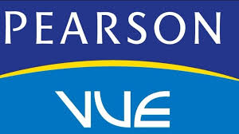
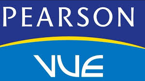

En Fundacion Kinal SOMOS GRANDEZA

Kinal es un Centro Educativo privado, no lucrativo, dirigido a la formación técnica profesional de jóvenes y adultos, de
beneficio colectivo y asistencia social en favor de los sectores más necesitados de la comunidad.
Nuestro valor fundamental es enseñar a realizar el trabajo bien hecho, que sea la base de la superación de alumnos y el
medio para servir a los demás.
Kinal ofrece su programa de Educación General
Básica para todos aquellos jóvenes que buscan una
orientación técnica y excelencia académica.
Durante 3 años se prepara al joven de forma técnica
y académica, el egresado estará listo trabajar en el ramo
técnico de la especialidad que eligió estudiar;
el título obtenido le permitirá ingresar a la
universidad.

Contamos con más de 30 especialidades
técnicas y tecnológicas que pueden favorecer tu
crecimiento y/o tu inserción laboral.

Podemos diseñar conjuntamente el
programa de formación
profesional que mejor se adapte a tus
necesidades de capacitación.
Dirigido al fortalecimiento de
mandos medios y especialmente aquellos que
han cursado una carrera técnica y
desean continuar con estudios a nivel
universitario. Estos estudios
son avalados por la Universidad del Istmo.


 


infoets@kinal.org.gt
infotic@kinal.org.gt
infobas@kinal.org.gt
infocet@kinal.org.gt

¿Porque Realice este diseño?
En lo personal es mas minimalista,
no contiene tanto contenido como la
original.
6 avenida 13-54 zona 7, Colonia
Landívar, 01007 Ciudad de Guatemala,
Guatemala, C.A.